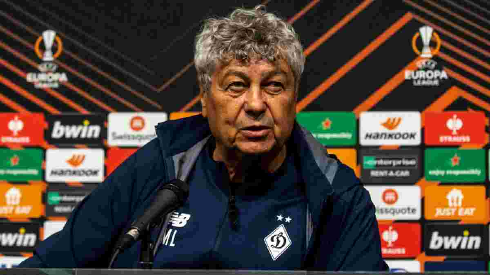

Мірча Луческу: Матч із Шахтарем у Львові – не найкраща ідея
Головний тренер київського 'Динамо' Мірча Луческу на прес-конференції перед матчем з 'Ренном висловився, в тому числі, і про майбутній матч чемпіонату України з 'Шахтарем', проведення якого зараз виявилося під питанням: 'Спочатку планувалося, що матч пройде у Лондоні, все було розплановано. Однак під час останніх російських атак ми перебували у Львові, гравці все чули та відчували. Вони турбуються та переживають за свої родини. Мені здається, що повертатися до Львова зараз, можливо, не найкраща ідея. Ми запропонували кілька варіантів: зіграти у Варшаві, у Кракові, чи у Львові, але трохи згодом - у понеділок чи вівторок, оскільки 'Шахтар' грав учора, а ми граємо завтра. У нас буде дуже мало часу на відновлення та переїзд, ми зможемо провести максимум одне тренування. Тому чекаємо на відповідь від 'Шахтаря', УАФ та УПЛ'.